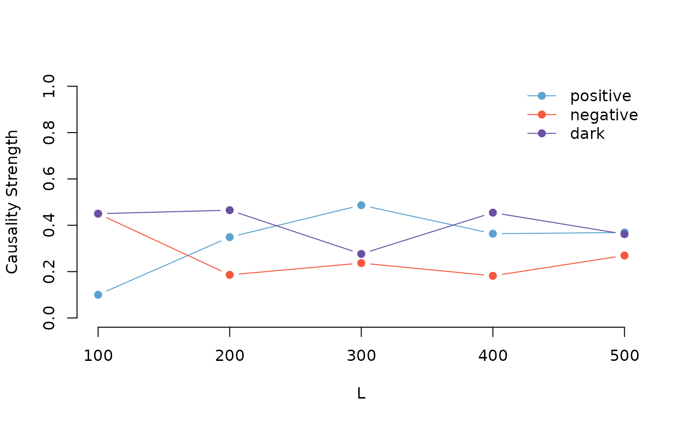

Pattern Causality between two series
Stavros Stavroglou, Athanasios Pantelous, Hui Wang
Source:vignettes/series.Rmd
series.RmdThis page will show more details of analyzing the causality between two series.
Cross validation
As an example, we could import climate from
patterncausality package.
library(patterncausality)
data(climate_indices)Then we consider a method of cross-validation to see the robustness of pattern causality.
set.seed(123)
X <- climate_indices$PNA
Y <- climate_indices$NAO
numberset <- c(100,200,300,400,500)
result <- pcCrossValidation(X,Y,3,2,"euclidean",1,FALSE,numberset)
#> | | | 0% | |################ | 25% | |################################ | 50% | |################################################ | 75% | |################################################################| 100%
print(result)
#> positive negative dark
#> 100 0.1000000 0.4500000 0.4500000
#> 200 0.3488372 0.1860465 0.4651163
#> 300 0.4868421 0.2368421 0.2763158
#> 400 0.3636364 0.1818182 0.4545455
#> 500 0.3687943 0.2695035 0.3617021In order to make the results better observed, we provide the
plotCV function to give a line chart of the result.
plotCV(result)
We can find that the causality keep the same position when the sample number is large enough, this method indeed captures hidden patterns and causal connections in sequences.